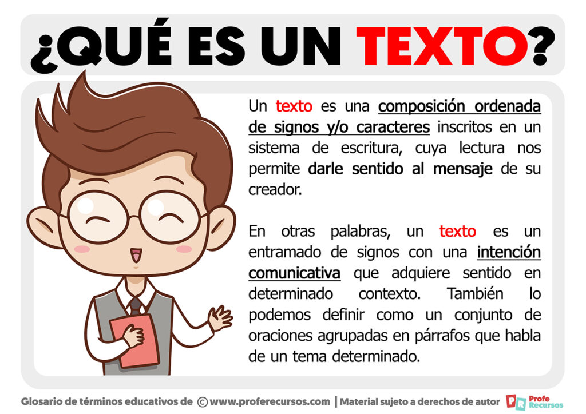

Grupo II
El Texto Descriptivo

Expositor: César D. Ortiz
Matricula: 100067451
Sabado 12 de Agosto del 2023
AGENDA

- Introducción
- ¿Qué Es Texto Descriptivo?
- Características de la Descripción
- Tipos de Descripción
- Cualidades de la Descripción
- Producción de Textos Descriptivos
- Conclusion
Introducción
¿Qué es un texto ?

Introducción
Tipos de Texto
¿Qué Es Texto Descriptivo?

La descripción es un modo de organizar el discurso que sirve para
representar la realidad a través del lenguaje. Se pueden describir
todos los aspectos de la realidad, desde los más concretos a los más
abstractos, es decir, se pueden representar lingüísticamente a
personas, animales, objetos, paisajes, épocas, sentimientos, etc.
Características de la Descripción
Un texto descriptivo busca que el lector pueda llegar a crear una
idea mental clara del mensaje que quiere transmitir
Dependiendo de su naturaleza, el texto descriptivo puede ser escrito
desde la objetividad, o desde la subjetividad.
Se puede recurrir al uso de licencias literarias, como puede ser la
hipérbole, o herramientas del lenguaje que sirvan para que el
interlocutor se cree una idea clara.
Sus funciones fundamentales son las de definir, explicar e incitar.
Tipos de Descripción

Descripción Objetiva: Imparcial, basada en hechos y datos concretos.
Descripción Subjetiva: Incluye emociones y opiniones del autor.
Cualidades de la Descripción
Precisión: Uso de términos específicos para transmitir detalles.
Claridad: Evitar ambigüedades y confusiones en la interpretación.
Vivacidad: Empleo de recursos literarios para hacer la descripción
más viva y atractiva.
Producción de Textos Descriptivos
Podemos considerar tres procedimientos ordenados:
Establecimiento del tema: es la presentación del objeto como un
todo. Éste se puede establecer desde el inicio o bien después de
enumerar características.
Caracterización: se distinguen las cualidades, las propiedades y las
partes del objeto de la descripción.
Relación con el mundo exterior: se establece una relación tanto en
lo que se refiere al espacio y el tiempo como a las múltiples
asociaciones que se pueden activar con otros mundos y otros objetos
análogos (comparación, metonimia, metáfora).
Conclusión
- La descripción es un modo de organizar el discurso
-
Tipos de Descripción: Objetiva ó Subjetiva
- Se puede recurrir al uso de licencias literarias
- Producción de Textos Descriptivos
- Establecimiento del tema
- Caracterización:
- Relación con el mundo exterior:
Fin